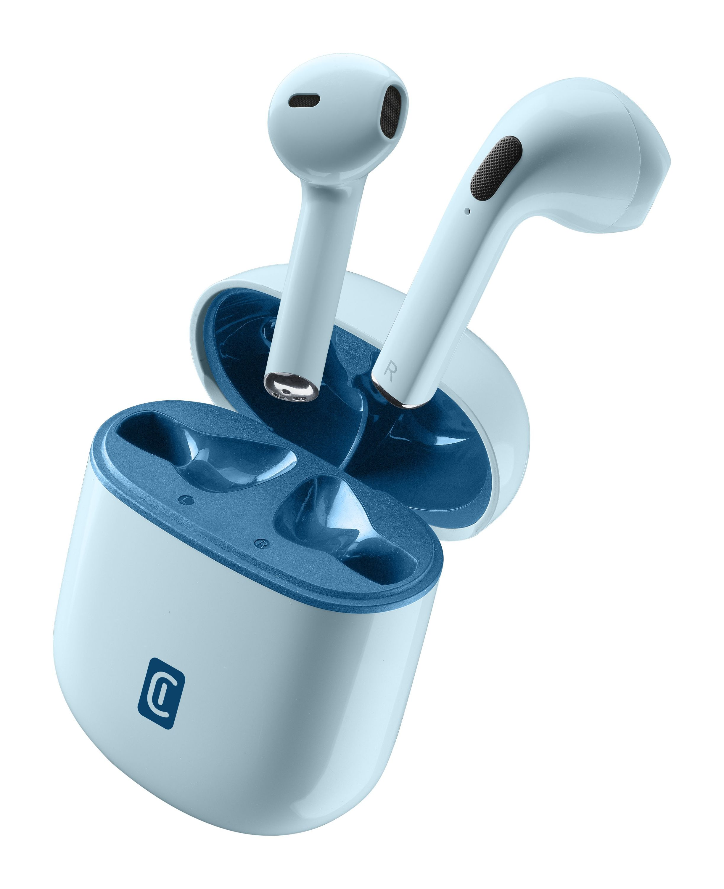

CASCOS
Inalambricos
¿Para que sirven estos cascos y porque usarlos?
Los auriculares inalámbricos destacan por su comodidad y versatilidad, eliminando la necesidad de cables para mayor libertad de movimiento. Son ideales para escuchar música, hacer ejercicio, trabajar o atender llamadas, gracias a su conectividad Bluetooth y autonomía de batería. Muchos modelos incluyen funciones avanzadas como cancelación de ruido, controles táctiles y micrófonos integrados. Su diseño compacto y portátil los hace perfectos para el uso diario, ofreciendo calidad de sonido y practicidad en cualquier entorno.
